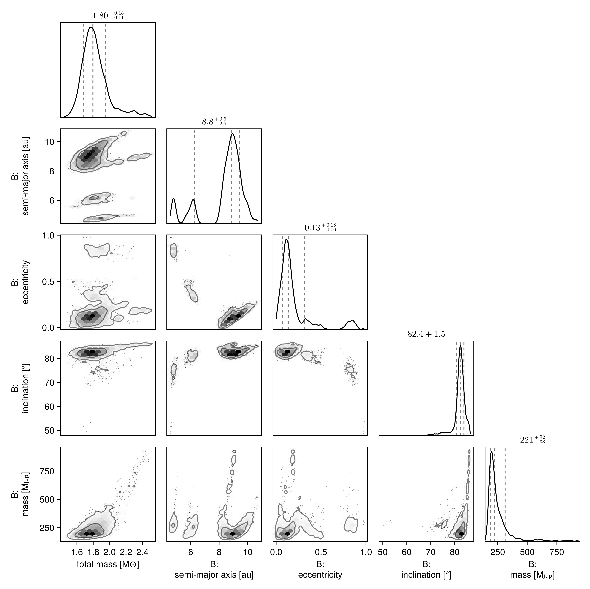
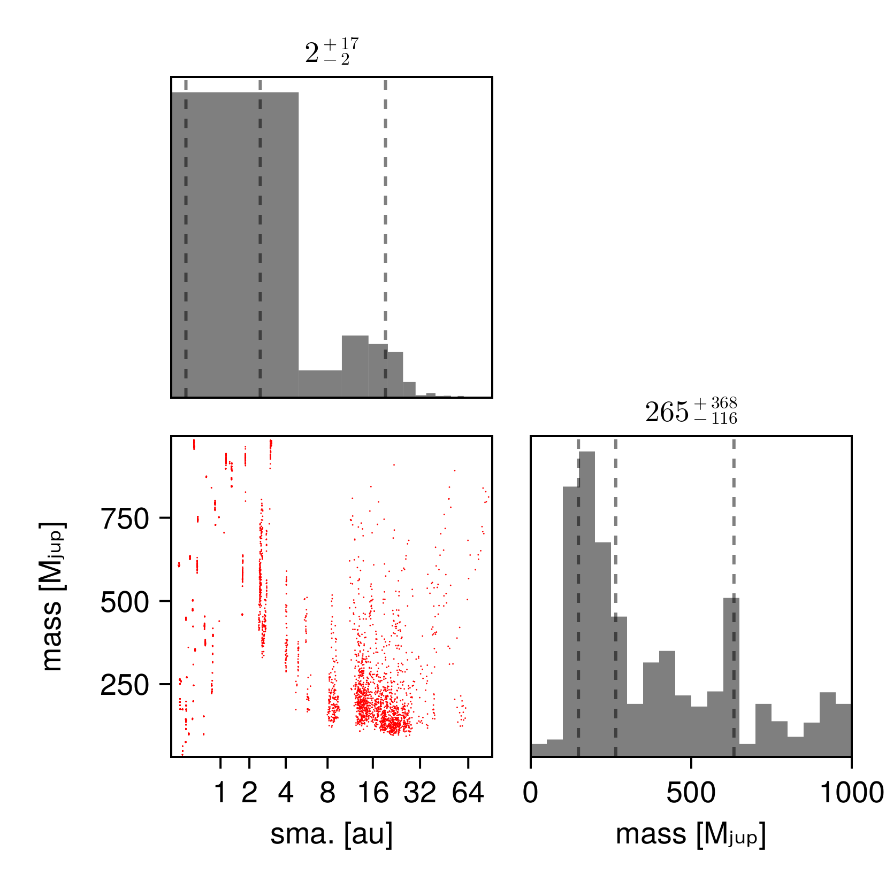

Fit Proper Motion Anomaly
Octofitter.jl supports fitting orbit models to astrometric motion, in the form of GAIA-Hipparcos proper motion anomaly (HGCA; https://arxiv.org/abs/2105.11662) . These data points are calculated by finding the difference between a long term proper motion of a star between the Hipparcos and GAIA catalogs, and their proper motion calculated within the windows of each catalog.
For Hipparcos/GAIA this gives four data points that can constrain the dynamical mass & orbits of planetary companions (assuming we subtract out the net trend).
For this tutorial, we will examine the star and companion HD 91312 A & B, discovered by SCExAO. We will use their published astrometry and proper motion anomaly extracted from the HGCA.
The first step is to find the GAIA source ID for your object. For HD 91312, SIMBAD tells us the GAIA DR3 ID is 756291174721509376.
Planet Model
For this model, we will have to add the variable mass as a prior. The units used on this variable are Jupiter masses, in contrast to M, the primary's mass, in solar masses. A reasonable uninformative prior for mass is Uniform(0,1000) or LogUniform(1,1000) depending on the situation.
For this model, we will change our parameterization to be on the host mass and secondary mass, rather than total mass and secondary mass.
Initial setup:
using Octofitter, Distributions, Plots, Randomastrom = PlanetRelAstromLikelihood(
(epoch=mjd("2016-12-15"), ra=133., dec=-174., σ_ra=07.0, σ_dec=07., cor=0.2),
(epoch=mjd("2017-03-12"), ra=126., dec=-176., σ_ra=04.0, σ_dec=04., cor=0.3),
(epoch=mjd("2017-03-13"), ra=127., dec=-172., σ_ra=04.0, σ_dec=04., cor=0.1),
(epoch=mjd("2018-02-08"), ra=083., dec=-133., σ_ra=10.0, σ_dec=10., cor=0.4),
(epoch=mjd("2018-11-28"), ra=058., dec=-122., σ_ra=10.0, σ_dec=20., cor=0.3),
(epoch=mjd("2018-12-15"), ra=056., dec=-104., σ_ra=08.0, σ_dec=08., cor=0.2),
)
@planet B Visual{KepOrbit} begin
a ~ LogUniform(0.1,20)
e ~ Uniform(0,0.999)
ω ~ UniformCircular()
i ~ Sine() # The Sine() distribution is defined by Octofitter
Ω ~ UniformCircular()
mass = system.M_sec
τ ~ UniformCircular(1.0)
P = √(B.a^3/system.M)
tp = B.τ*B.P*365.25 + 57737 # reference epoch for τ. Choose an MJD date near your data.
end astromPlanet B
Derived:
ω, Ω, mass, τ, P, tp,
Priors:
a Distributions.LogUniform{Float64}(a=0.1, b=20.0)
e Distributions.Uniform{Float64}(a=0.0, b=0.999)
ωy Distributions.Normal{Float64}(μ=0.0, σ=1.0)
ωx Distributions.Normal{Float64}(μ=0.0, σ=1.0)
i Sine()
Ωy Distributions.Normal{Float64}(μ=0.0, σ=1.0)
Ωx Distributions.Normal{Float64}(μ=0.0, σ=1.0)
τy Distributions.Normal{Float64}(μ=0.0, σ=1.0)
τx Distributions.Normal{Float64}(μ=0.0, σ=1.0)
Octofitter.UnitLengthPrior{:ωy, :ωx}: √(ωy^2+ωx^2) ~ LogNormal(log(1), 0.02)
Octofitter.UnitLengthPrior{:Ωy, :Ωx}: √(Ωy^2+Ωx^2) ~ LogNormal(log(1), 0.02)
Octofitter.UnitLengthPrior{:τy, :τx}: √(τy^2+τx^2) ~ LogNormal(log(1), 0.02)
PlanetRelAstromLikelihood Table with 6 columns and 6 rows:
epoch ra dec σ_ra σ_dec cor
┌─────────────────────────────────────────
1 │ 57737.0 133.0 -174.0 7.0 7.0 0.2
2 │ 57824.0 126.0 -176.0 4.0 4.0 0.3
3 │ 57825.0 127.0 -172.0 4.0 4.0 0.1
4 │ 58157.0 83.0 -133.0 10.0 10.0 0.4
5 │ 58450.0 58.0 -122.0 10.0 20.0 0.3
6 │ 58467.0 56.0 -104.0 8.0 8.0 0.2
System Model & Specifying Proper Motion Anomaly
Now that we have our planet model, we create a system model to contain it.
@system HD91312 begin
M_pri ~ truncated(Normal(1.61, 0.1), lower=0)
M_sec ~ LogUniform(0.5, 1000) # MJup
M = system.M_pri + system.M_sec*Octofitter.mjup2msol
plx ~ gaia_plx(gaia_id=756291174721509376)
# Priors on the centre of mass proper motion
pmra ~ Normal(-137, 10)
pmdec ~ Normal(2, 10)
end HGCALikelihood(gaia_id=756291174721509376) B
model = Octofitter.LogDensityModel(HD91312)LogDensityModel for System HD91312 of dimension 14 with fields .ℓπcallback and .∇ℓπcallback
We specify priors on M and plx as usual, but here we use the gaia_plx helper function to read the parallax and uncertainty directly from the HGCA using its source ID.
We also add parameters for the long term system's proper motion. This is usually close to the long term trend between the Hipparcos and GAIA measurements.
After the priors, we add the proper motion anomaly measurements from the HGCA. If this is your first time running this code, you will be prompted to automatically download and cache the catalog which may take around 30 seconds.
Sampling from the posterior
Because proper motion anomaly data is quite sparse, it can often produce multi-modal posteriors. If your orbit already has several relative astrometry or RV data points, this is less of an issue. But if you are sampling from proper motion data with only a few relative astrometry points, it is recommended to use the Pigeons.jl sampler instead of Octofitter's default. This sampler is less efficient for unimodal distributions, but is more robust at exploring posteriors with distinct peaks.
To install and use Pigeons.jl with Octofitter, type using Pigeons at in the terminal and accept the prompt to install the package.
We now sample from our model using Pigeons:
using Pigeons
model = Octofitter.LogDensityModel(HD91312)
Random.seed!(1)
chain, pt = octofit_pigeons(model, n_rounds=12)
display(chain)┌ Warning: Module ForwardDiff with build ID fafbfcfd-dae2-ca5f-0000-0033cd8fb339 is missing from the cache.
│ This may mean ForwardDiff [f6369f11-7733-5829-9624-2563aa707210] does not support precompilation but is imported by a module that does.
└ @ Base loading.jl:1942
┌ Warning: Module Octofitter with build ID ffffffff-ffff-ffff-0000-0077396321ae is missing from the cache.
│ This may mean Octofitter [daf3887e-d01a-44a1-9d7e-98f15c5d69c9] does not support precompilation but is imported by a module that does.
└ @ Base loading.jl:1942
┌ Warning: Module Pigeons with build ID ffffffff-ffff-ffff-0000-013a2991bd3c is missing from the cache.
│ This may mean Pigeons [0eb8d820-af6a-4919-95ae-11206f830c31] does not support precompilation but is imported by a module that does.
└ @ Base loading.jl:1942
┌ Warning: It looks like sample_iid!() is not implemented for a
│ reference_log_potential of type Octofitter.LogDensityModel{Octofitter.var"#ℓπcallback#101"{System{Priors, Derived, Tuple{}, @NamedTuple{B::Planet{Visual{KepOrbit}, Priors, Derived, Tuple{}}}}, RuntimeGeneratedFunctions.RuntimeGeneratedFunction{(:arr,), Octofitter.var"#_RGF_ModTag", Octofitter.var"#_RGF_ModTag", (0x6a3a3c52, 0x9f739f81, 0x2686c61f, 0x0d8d7d5c, 0x96979b69), Expr}, RuntimeGeneratedFunctions.RuntimeGeneratedFunction{(:arr,), Octofitter.var"#_RGF_ModTag", Octofitter.var"#_RGF_ModTag", (0x14709a2d, 0x52b7732d, 0x54532ca7, 0xfc75f6cf, 0x87e382a6), Expr}, RuntimeGeneratedFunctions.RuntimeGeneratedFunction{(:arr,), Octofitter.var"#_RGF_ModTag", Octofitter.var"#_RGF_ModTag", (0x6699b2b9, 0xe8eb56ed, 0xc4592e76, 0x0676f286, 0x01835be0), Expr}, RuntimeGeneratedFunctions.RuntimeGeneratedFunction{(:system, :θ_system), Octofitter.var"#_RGF_ModTag", Octofitter.var"#_RGF_ModTag", (0xcae6917c, 0x5223b5f1, 0x8cee8b99, 0x33c583d6, 0x27d6eb93), Expr}, Float64}, Octofitter.var"#97#112"{ForwardDiff.GradientConfig{ForwardDiff.Tag{Octofitter.var"#ℓπcallback#101"{System{Priors, Derived, Tuple{}, @NamedTuple{B::Planet{Visual{KepOrbit}, Priors, Derived, Tuple{}}}}, RuntimeGeneratedFunctions.RuntimeGeneratedFunction{(:arr,), Octofitter.var"#_RGF_ModTag", Octofitter.var"#_RGF_ModTag", (0x6a3a3c52, 0x9f739f81, 0x2686c61f, 0x0d8d7d5c, 0x96979b69), Expr}, RuntimeGeneratedFunctions.RuntimeGeneratedFunction{(:arr,), Octofitter.var"#_RGF_ModTag", Octofitter.var"#_RGF_ModTag", (0x14709a2d, 0x52b7732d, 0x54532ca7, 0xfc75f6cf, 0x87e382a6), Expr}, RuntimeGeneratedFunctions.RuntimeGeneratedFunction{(:arr,), Octofitter.var"#_RGF_ModTag", Octofitter.var"#_RGF_ModTag", (0x6699b2b9, 0xe8eb56ed, 0xc4592e76, 0x0676f286, 0x01835be0), Expr}, RuntimeGeneratedFunctions.RuntimeGeneratedFunction{(:system, :θ_system), Octofitter.var"#_RGF_ModTag", Octofitter.var"#_RGF_ModTag", (0xcae6917c, 0x5223b5f1, 0x8cee8b99, 0x33c583d6, 0x27d6eb93), Expr}, Float64}, Float64}, Float64, 14, Vector{ForwardDiff.Dual{ForwardDiff.Tag{Octofitter.var"#ℓπcallback#101"{System{Priors, Derived, Tuple{}, @NamedTuple{B::Planet{Visual{KepOrbit}, Priors, Derived, Tuple{}}}}, RuntimeGeneratedFunctions.RuntimeGeneratedFunction{(:arr,), Octofitter.var"#_RGF_ModTag", Octofitter.var"#_RGF_ModTag", (0x6a3a3c52, 0x9f739f81, 0x2686c61f, 0x0d8d7d5c, 0x96979b69), Expr}, RuntimeGeneratedFunctions.RuntimeGeneratedFunction{(:arr,), Octofitter.var"#_RGF_ModTag", Octofitter.var"#_RGF_ModTag", (0x14709a2d, 0x52b7732d, 0x54532ca7, 0xfc75f6cf, 0x87e382a6), Expr}, RuntimeGeneratedFunctions.RuntimeGeneratedFunction{(:arr,), Octofitter.var"#_RGF_ModTag", Octofitter.var"#_RGF_ModTag", (0x6699b2b9, 0xe8eb56ed, 0xc4592e76, 0x0676f286, 0x01835be0), Expr}, RuntimeGeneratedFunctions.RuntimeGeneratedFunction{(:system, :θ_system), Octofitter.var"#_RGF_ModTag", Octofitter.var"#_RGF_ModTag", (0xcae6917c, 0x5223b5f1, 0x8cee8b99, 0x33c583d6, 0x27d6eb93), Expr}, Float64}, Float64}, Float64, 14}}}, Vector{DiffResults.MutableDiffResult{1, Float64, Tuple{Vector{Float64}}}}, Octofitter.var"#ℓπcallback#101"{System{Priors, Derived, Tuple{}, @NamedTuple{B::Planet{Visual{KepOrbit}, Priors, Derived, Tuple{}}}}, RuntimeGeneratedFunctions.RuntimeGeneratedFunction{(:arr,), Octofitter.var"#_RGF_ModTag", Octofitter.var"#_RGF_ModTag", (0x6a3a3c52, 0x9f739f81, 0x2686c61f, 0x0d8d7d5c, 0x96979b69), Expr}, RuntimeGeneratedFunctions.RuntimeGeneratedFunction{(:arr,), Octofitter.var"#_RGF_ModTag", Octofitter.var"#_RGF_ModTag", (0x14709a2d, 0x52b7732d, 0x54532ca7, 0xfc75f6cf, 0x87e382a6), Expr}, RuntimeGeneratedFunctions.RuntimeGeneratedFunction{(:arr,), Octofitter.var"#_RGF_ModTag", Octofitter.var"#_RGF_ModTag", (0x6699b2b9, 0xe8eb56ed, 0xc4592e76, 0x0676f286, 0x01835be0), Expr}, RuntimeGeneratedFunctions.RuntimeGeneratedFunction{(:system, :θ_system), Octofitter.var"#_RGF_ModTag", Octofitter.var"#_RGF_ModTag", (0xcae6917c, 0x5223b5f1, 0x8cee8b99, 0x33c583d6, 0x27d6eb93), Expr}, Float64}}, System{Priors, Derived, Tuple{}, @NamedTuple{B::Planet{Visual{KepOrbit}, Priors, Derived, Tuple{}}}}, Octofitter.var"#86#100"{Vector{Distributions.Distribution{Distributions.Univariate, Distributions.Continuous}}}, RuntimeGeneratedFunctions.RuntimeGeneratedFunction{(:arr,), Octofitter.var"#_RGF_ModTag", Octofitter.var"#_RGF_ModTag", (0x14709a2d, 0x52b7732d, 0x54532ca7, 0xfc75f6cf, 0x87e382a6), Expr}, RuntimeGeneratedFunctions.RuntimeGeneratedFunction{(:arr,), Octofitter.var"#_RGF_ModTag", Octofitter.var"#_RGF_ModTag", (0x6a3a3c52, 0x9f739f81, 0x2686c61f, 0x0d8d7d5c, 0x96979b69), Expr}}.
│ Instead, using step!().
└ @ Pigeons ~/.julia/packages/Pigeons/ePUnR/src/targets/target.jl:51
─────────────────────────────────────────────────────────────────────────────────────────────────────────────
scans restarts Λ time(s) allc(B) log(Z₁/Z₀) min(α) mean(α) min(αₑ) mean(αₑ)
────────── ────────── ────────── ────────── ────────── ────────── ────────── ────────── ────────── ──────────
2 0 4 0.552 2.31e+07 -3.16e+04 0 0.429 1 1
4 0 2 0.286 2.26e+04 -1.03e+04 0 0.714 1 1
8 0 2.87 0.616 3.7e+04 -1.83e+03 0 0.589 1 1
16 0 5.4 1.15 2.45e+04 -208 4.44e-112 0.229 1 1
32 0 5.1 2.23 3.47e+04 -151 5.32e-81 0.272 1 1
64 0 5.79 4.38 4.98e+04 -109 3.39e-42 0.172 1 1
128 0 6.25 8.73 7.74e+04 -98.3 2.67e-35 0.107 1 1
256 0 6.05 17.5 1.19e+05 -73.8 3.63e-15 0.136 1 1
512 0 6.24 34.4 2.07e+05 -68.9 1.6e-06 0.109 1 1
1.02e+03 0 6.32 69.1 2.46e+05 -70.3 7.63e-09 0.0976 1 1
2.05e+03 0 6.37 139 6.03e+05 -68 3.06e-05 0.09 1 1
4.1e+03 0 6.41 275 1.25e+06 -67.9 0.000185 0.0847 1 1
─────────────────────────────────────────────────────────────────────────────────────────────────────────────This takes about a minute on the first run due to JIT startup latency; subsequent runs are very quick even on e.g. an older laptop.
Analysis
The first step is to look at the table output above generated by MCMCChains.jl. The rhat column gives a convergence measure. Each parameter should have an rhat very close to 1.000. If not, you may need to run the model for more iterations or tweak the parameterization of the model to improve sampling. The ess column gives an estimate of the effective sample size. The mean and std columns give the mean and standard deviation of each parameter.
The second table summarizes the 2.5, 25, 50, 75, and 97.5 percentiles of each parameter in the model.
Another useful plotting function is octoplot which takes similar arguments and produces a 9 panel plot:
octoplot(model, chain, small=true)
Pair Plot
If we wish to examine the covariance between parameters in more detail, we can construct a pair-plot (aka. corner plot).
For a quick look, you can just run octocorner(model, chain), but for more control output you may wish to customize the labels, units, unit labels, etc. See the documentation of PairPlots.jl for more details.
# Create a corner plot / pair plot.
# We can access any property from the chain specified in Variables
using CairoMakie: Makie
using PairPlots
octocorner(model, chain, small=true)
Notice how there are three or more completely separated peaks? The default Octofitter sample (Hamiltonian Monte Carlo) is capabale of jumping 2-3σ gaps between modes, but such widely separated peaks can cause issues (hence why we used Pigeons in this example)
Fitting Astrometric Acceleration Only
If you wish to look at the possible locations/masses of a planet around a star using onnly GAIA/HIPPARCOS, you can follow a simplified approach.
As a start, you can restrict the orbital parameters to just semi-major axis, epoch of periastron passage, and mass.
@planet B Visual{KepOrbit} begin
a ~ LogUniform(0.1,200)
e ~ Uniform(0,0.999)
ω ~ UniformCircular()
i ~ Sine() # The Sine() distribution is defined by Octofitter
Ω ~ UniformCircular()
mass = system.M_sec
τ ~ UniformCircular(1.0)
P = √(B.a^3/system.M)
tp = B.τ*B.P*365.25 + 57737 # reference epoch for τ. Choose an MJD date near your data.
end # note we did not include the relative astrometry this time
@system HD91312 begin
M_pri ~ truncated(Normal(1.61, 0.1), lower=0)
M_sec ~ LogUniform(0.5, 1000) # MJup
M = system.M_pri + system.M_sec*Octofitter.mjup2msol
plx ~ gaia_plx(gaia_id=756291174721509376)
# Priors on the centre of mass proper motion
pmra ~ Normal(-137, 10)
pmdec ~ Normal(2, 10)
end HGCALikelihood(gaia_id=756291174721509376) B
model = Octofitter.LogDensityModel(HD91312)LogDensityModel for System HD91312 of dimension 14 with fields .ℓπcallback and .∇ℓπcallback
This models assumes a circular, face-on orbit.
using Pigeons
model = Octofitter.LogDensityModel(HD91312)
Random.seed!(1)
chain, pt = octofit_pigeons(model, n_rounds=12)(chain = MCMC chain (4096×24×1 Array{Float64, 3}), pt = PT(checkpoint = false, ...))Since the orbits are so unconstrained with this model, it's not useful to plot them in the plane of the sky.
We will instead just display the marginal posterior of secondary mass vs. semi-major axis. We can do this using PairPlots.jl.
using CairoMakie, PairPlots
pairplot(
(; a=chain["B_a"][:], mass=chain["B_mass"][:]) =>
(
PairPlots.Scatter(color=:red),
PairPlots.MarginHist(),
PairPlots.MarginConfidenceLimits()
),
labels=Dict(:mass=>"mass [Mⱼᵤₚ]", :a=>"sma. [au]"),
axis = (;
a = (;
scale=Makie.pseudolog10,
ticks=2 .^ (0:1:6)
)
)
)